第 4 讲：游戏引擎中的渲染——从硬件到管线
从 GPU 硬件结构出发，讲清游戏引擎渲染管线如何组织数据、剔除与绘制，并理解现代 GPU-Driven 与 Nanite 的设计动机
◆ 学完这一讲，你应该能
能画出从顶点数据到屏幕像素的渲染管线主要阶段，并说明每个阶段在做什么
能解释 SIMD/SIMT 与 GPU 架构（GPC/SM/CUDA Core/TMU）对渲染性能的影响
能说明顶点缓冲、索引缓冲、子网格（submesh）与多材质模型的组织方式
能列举视锥剔除、BVH、PVS、GPU 剔除的适用场景与优缺点
能解释纹理压缩（块压缩）与建模方式对渲染管线的影响
能理解 GPU-Driven 与基于 Cluster 的网格管线（含 Nanite）的核心思想
核心结论速记
游戏渲染是工程优化问题：要在有限 CPU/GPU 带宽和内存下稳定达到 30/60/120 FPS。
GPU 是 SIMT 架构：同一指令并行处理大量数据，因此要避免分支发散、提高缓存与带宽效率。
一个模型由多个子网格（submesh）组成，每个子网格对应一种材质，绘制时按材质排序并合批。
可见性剔除（视锥、BVH、PVS、GPU 剔除）的目标是“尽量少画”，是引擎渲染性能的关键。
纹理必须用块压缩（BC7/ASTC 等）以支持随机访问和快速解码，不能直接用 JPG/PNG。
现代管线把剔除与绘制决策搬到 GPU（GPU-Driven），Nanite 用层次化 Cluster + 持久线程 CS 实现无缝 LOD。
引擎设计深受硬件架构影响：理解硬件才能理解渲染管线为什么长这样。
011. 游戏渲染到底在解决什么问题
课件开篇先给了一个对比：图形学理论课关心的是“表示正确、数学正确”，可以离线慢慢算；而游戏引擎渲染是实时的，必须在 30 FPS（甚至 60/120 FPS、VR）下，把成千上万个物体、几十种效果画出来。
游戏渲染的挑战可以归纳为四条：
- 海量物体与效果：数万个物体、几十种材质与光照效果。
- 复杂硬件：CPU 与 GPU 是两种完全不同的处理器，中间隔着高延迟、有限带宽的总线。
- 帧率承诺：必须稳定达到目标帧率，不能“平均 60 帧但偶尔卡一下”。
- 资源限制：CPU 带宽和内存还要分给游戏逻辑、网络、动画、物理、AI，渲染不能独占。
所以课件给游戏引擎渲染下的定义是：一个高度优化的软件框架，在现代硬件（PC、主机、手机）上满足游戏的苛刻渲染需求。这句话是整讲的主线——后面每个设计（子网格、剔除、GPU-Driven）都是在回答“怎么优化”。
直觉：图形学理论教你“怎么把光算对”，游戏引擎渲染教你“怎么在 16 毫秒内把光算得足够对”。
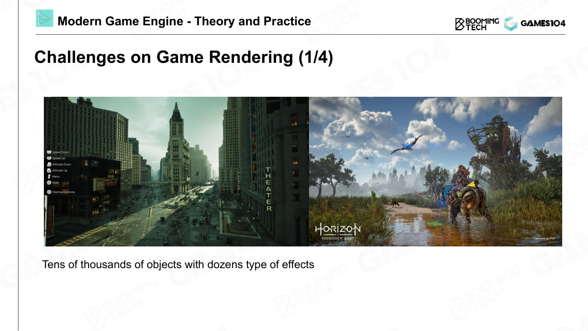
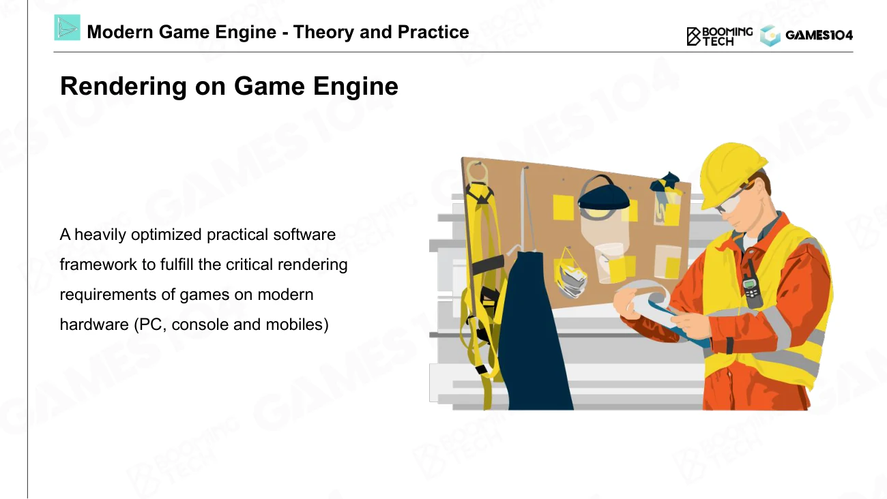
常见坑
把“平均帧率”当成达标 → 实际体验由最慢帧决定 → 用 1% low / 帧时间曲线评估，而不是只看平均 FPS。
以为渲染性能只取决于 GPU → CPU 提交、带宽、内存也会成为瓶颈 → 用 profiler 分清 CPU/GPU 瓶颈再优化。
UE / Unity 落地
UE：用
stat unit看 Frame/Game/Draw/GPU 四项时间，先定位瓶颈在 CPU 还是 GPU。Unity：用 Profiler 的 CPU/GPU 模块与 Frame Debugger 定位是提交瓶颈还是像素/顶点瓶颈。
022. 渲染管线的数据流：顶点、三角形、材质与像素
课件把渲染的“积木”拆成三层数据：
- 顶点数据（Vertex Data）与三角形数据（Triangle Data）：数百万个顶点和三角形。
- 材质参数（Material Parameters）与纹理（Textures）：决定表面看起来是什么。
- 像素：数千万像素，每个像素要跑几百条 ALU 指令、做十几次纹理采样。
管线的主要计算阶段：
- 投影变换（Projection Transform）：把物体从局部空间经世界空间、观察空间变到裁剪空间。
- 光栅化（Rasterization）：把三角形变成屏幕上的像素片段（fragment）。
- 着色（Shading）：对每个片段执行 shader，包含常量/参数、ALU 运算、纹理采样、分支。
- 纹理采样（Texture Sampling）：课件特别强调它是三步——先选两个最近的 mipmap 层级，再在两层内各做双线性插值，最后在两层结果之间线性插值（即三线性过滤）。
这里的关键直觉是：顶点数、像素数、纹理采样次数是三个独立的成本维度。顶点多 → 几何瓶颈；像素多或 shader 复杂 → 像素/ALU 瓶颈；采样多 → TMU 或带宽瓶颈。后面讲硬件和优化，都是围绕这三条成本线展开。
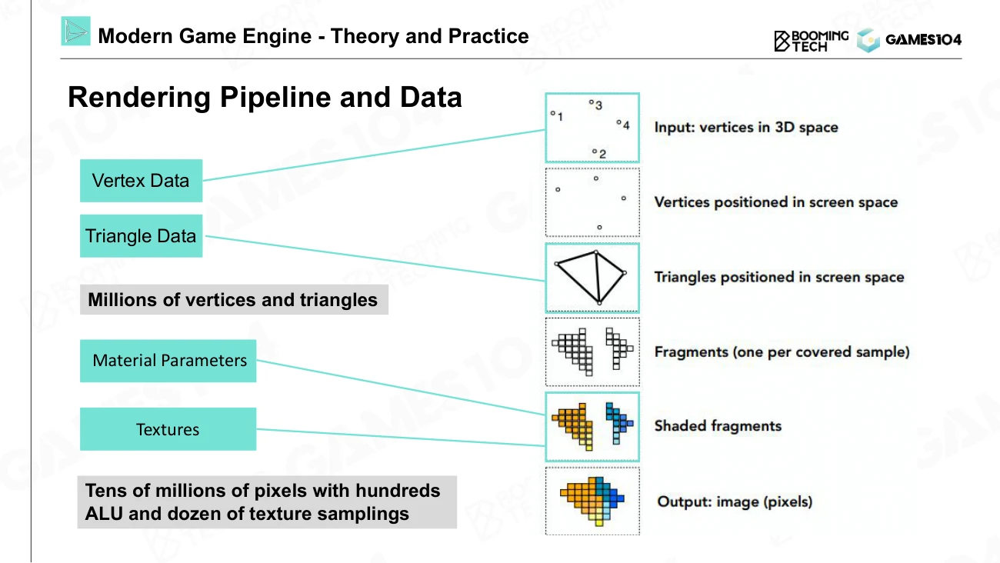
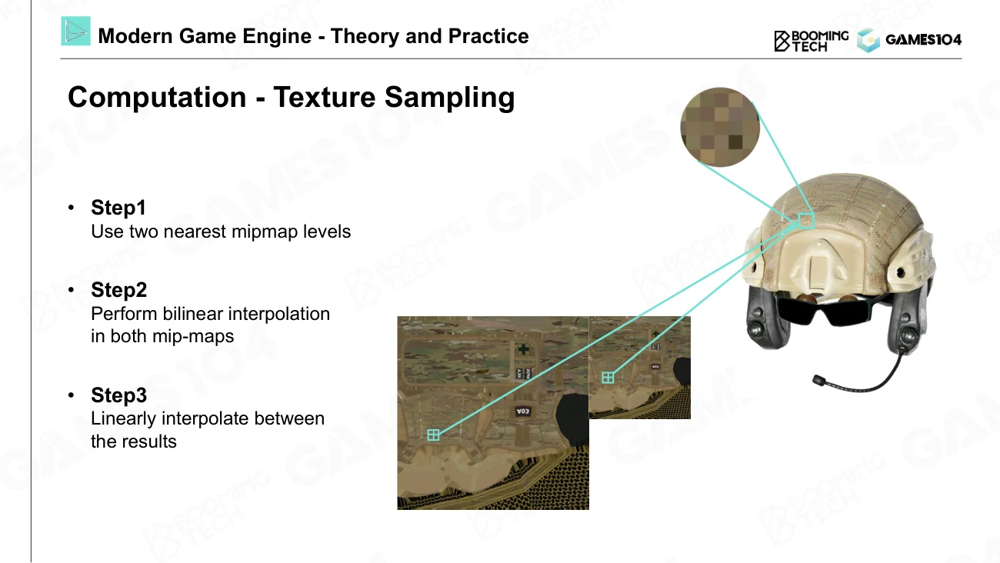
常见坑
以为 mipmap 只是“缩小图” → 它同时解决远处闪烁和缓存效率 → 关闭 mipmap 会既闪烁又变慢。
在 shader 里写大量动态分支 → GPU 是 SIMT，分支发散会让两条路径都执行 → 尽量用无分支写法或把分支提到材质变体。
UE / Unity 落地
UE：材质编辑器里的 Texture Sample 节点默认按 mip 采样，Sampler 的 MipValueMode 可控制；移动端注意采样次数。
Unity：Shader 中
tex2D自动按 mip 采样，tex2Dlod可手动指定 mip 层级。
033. 理解 GPU：SIMT、GPC/SM 与性能边界
课件用一页讲 SIMD 与 SIMT：
- SIMD（Single Instruction Multiple Data）：一条指令同时处理多个数据点。
- SIMT（Single Instruction Multiple Threads）：SIMD 与多线程结合的并行执行模型，是 GPU 的典型模型。
GPU 的硬件层次大致是：GPC（Graphics Processing Cluster）→ SM（Streaming Multiprocessor）→ CUDA Core（并行计算单元）、Texture Unit（纹理单元）。课件还提到 Warp（线程束）——GPU 以 32 个线程为一组执行同一条指令，这就是为什么分支发散代价高：一组里有人走 if 有人走 else，硬件只能两条都跑。
CPU 到 GPU 的数据流有两个关键事实：
- 高延迟、有限带宽：CPU 与 GPU 之间的传输很贵。
- 显存内并行度高：GPU 访问显存是高度并行的。
因此课件的建议是：尽可能减少 CPU 与 GPU 之间的数据传输，并注意缓存效率、避免冯·诺依曼瓶颈。
性能边界可以分成四类：Memory Bound、ALU Bound、TMU Bound、BW（带宽）Bound。优化前先判断自己撞的是哪堵墙，否则容易白忙。
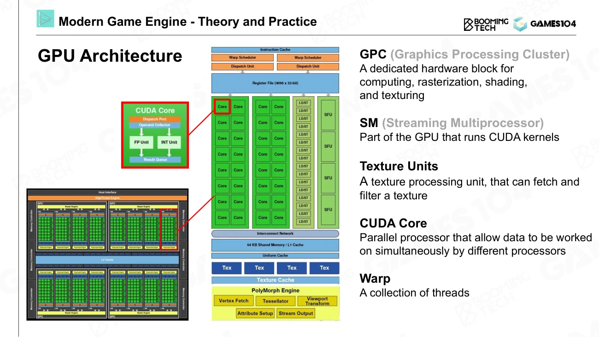
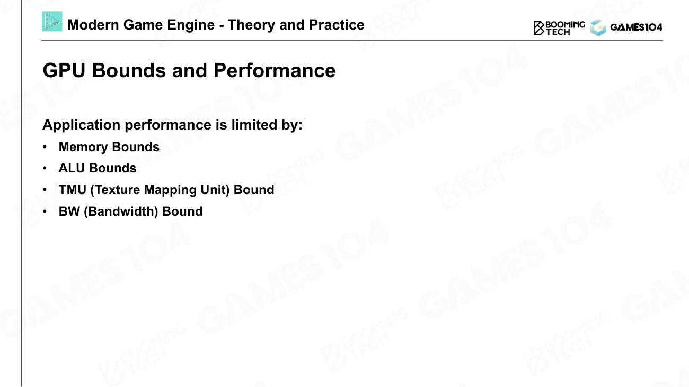
常见坑
在 shader 里用
if做逐像素的材质分支 → Warp 内发散导致两条路径都执行 → 改用材质变体或数学插值。每帧从 CPU 上传大量动态数据到 GPU → 带宽和延迟爆炸 → 用常量缓冲/结构化缓冲批量上传，能静态就静态。
UE / Unity 落地
UE：材质里的 Static Switch 会在编译期生成不同变体，避免运行时分支。
Unity：Shader 的
#pragma multi_compile/shader_feature生成变体，替代运行时分支。
044. 可渲染对象：网格、子网格与材质
游戏世界里“一切都是游戏对象”，对象用组件方式描述，其中 Mesh Render Component（网格渲染组件） 负责渲染。一个可渲染对象由这些积木组成：
- 网格图元（Mesh Primitive）：三角形/四边形等基本图元。
- 顶点缓冲与索引缓冲：顶点数据（位置、法线、UV 等）放在顶点缓冲（Vertex Buffer），索引数据放在索引缓冲（Index Buffer），各自还有声明（declaration）描述布局。
- 逐顶点法线：课件专门问“为什么需要逐顶点法线”——因为如果只用三角形面法线，模型看起来会是硬邦邦的多面体；插值逐顶点法线才能得到平滑着色。
- 材质（Material）：决定物体外观以及如何与光交互，比如光滑金属、亮面漆、粗糙石头、透明玻璃。经典材质模型有 Phong、Burley 次表面、PBR 等。
- 纹理（Textures）：材质里可以有多种纹理贴图。
- Shader：分为自定义 shader 与固定功能着色（Fixed Function Shading）。
一个模型往往有多个材质，比如头盔有皮肤、衣服、鞋子。引擎的做法是子网格（Submesh）：每个子网格记录在索引缓冲中的 offset 和 count，并绑定各自的材质与纹理。这样一次网格数据上传，就能按子网格分批绘制不同材质。这是“一个模型多材质”的标准答案。
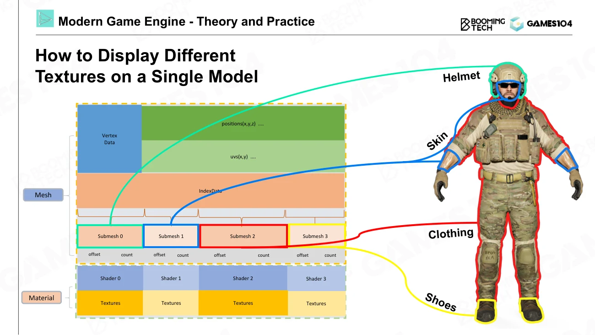
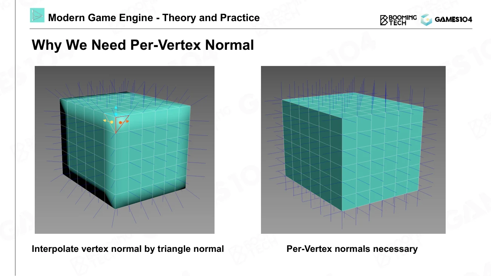
常见坑
法线没有归一化 → 高光位置偏移、亮度异常 → 在顶点或像素 shader 里对插值后的法线做 normalize。
子网格划分过碎 → draw call 数量暴涨 → 合并同材质子网格，或使用材质合批。
UE / Unity 落地
UE：Static Mesh 的 Element 对应子网格，每个 Element 可指定不同 Material。
Unity：Mesh 的
subMeshCount与SetTriangles的 submesh 参数对应子网格，Renderer 的materials数组按子网格绑定材质。
055. 可见性剔除：尽量少画
对每个视角，场景里大量物体根本不需要画。剔除的核心是用最简单的包围体做便宜的相交测试。课件列了好包围体的标准：相交测试便宜、贴合紧、计算便宜、易于旋转和变换、占用内存少。
常见的剔除层次：
- 视锥剔除（View Frustum Culling）：用包围盒/包围球与视锥做测试。
- 层次化剔除：四叉树（Quad Tree）、BVH（Bounding Volume Hierarchy）。BVH 的构建有自顶向下、增量插入、自底向上三种方式。
- PVS（Potential Visibility Set，潜在可见集）：预计算“从某个区域能看到哪些区域”，运行时直接查表。课件讲了用 Portal（门户）生成 PVS 的思路：从门户出发确定潜在可见的叶子节点。PVS 的优点是比 BSP/Octree 快得多、更灵活兼容，还能按 PVS 预加载资源；缺点是预计算、动态物体不适用。
- GPU 剔除（GPU Culling）：把剔除搬到 GPU，利用并行性处理海量对象。
直觉：剔除是“先排除不可能看见的”，它比“把东西画得很快”更划算——不画就是零成本。
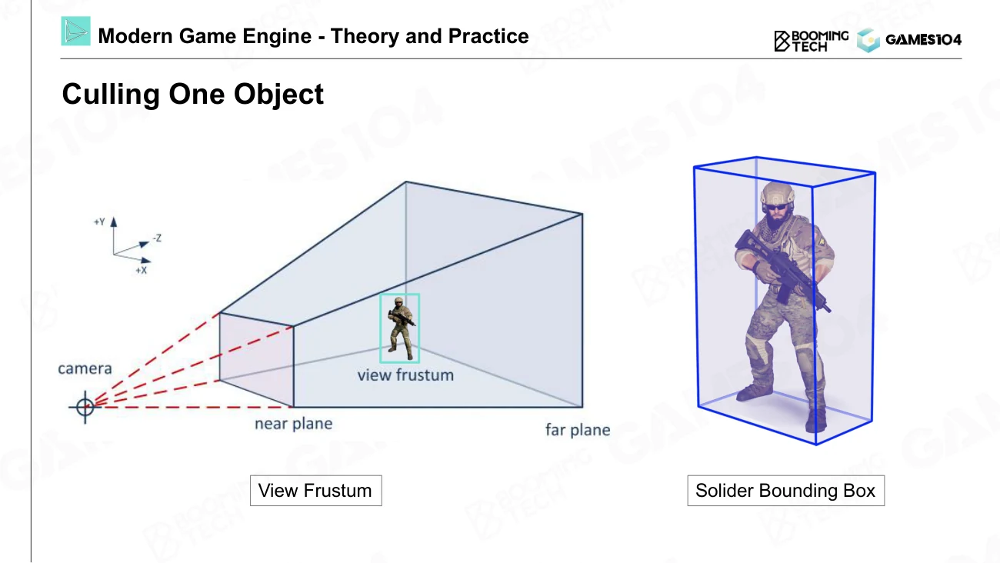
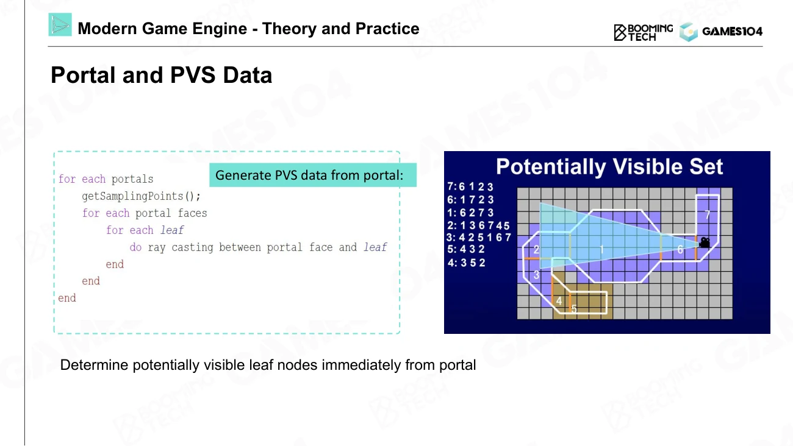
常见坑
包围盒比模型大很多 → 剔除失效，画了很多看不见的物体 → 调整包围体或使用更贴合的包围体。
动态物体依赖 PVS → PVS 是预计算的，动态物体会被错误剔除 → 动态物体走独立的视锥剔除通道。
UE / Unity 落地
UE：Primitive 的 Bounds 可在 Static Mesh 编辑器里查看和调整；
r.ShowBounds可视化包围盒。Unity：Renderer 的
bounds参与视锥剔除，可手动扩展；Occlusion Culling 窗口可烘焙 PVS 类似数据。
066. 纹理压缩与建模方式：内容侧的成本
纹理压缩是游戏引擎的“必知项”。传统图像压缩（JPG/PNG）压缩率高、画质好，但设计目标是整张图压缩/解压；而 GPU 采样需要随机访问——任意一个像素都要能快速取到。所以游戏纹理用块压缩（Block Compression）：把纹理切成固定大小的块（如 4×4），每块独立解码。
常见格式：PC 上现代用 BC7，老的有 DXT；移动端现代用 ASTC，老的有 ETC/PVRTC。选择时要在压缩率、画质、解码速度、编码速度之间权衡。
建模方式也影响渲染管线：
- 多边形建模（Polymodeling）：灵活、有创意，但工作量大。
- 雕刻（Sculpting）：能做出无限细节，但数据量巨大。
- 扫描（Scanning）：真实，但数据量巨大。
- 程序化建模（Procedural Modeling）：智能、可程序化，但难以达到艺术效果。
这里埋下伏笔：雕刻和扫描产生的海量三角形，正是后面 Cluster-Based Mesh Pipeline 与 Nanite 要解决的问题。
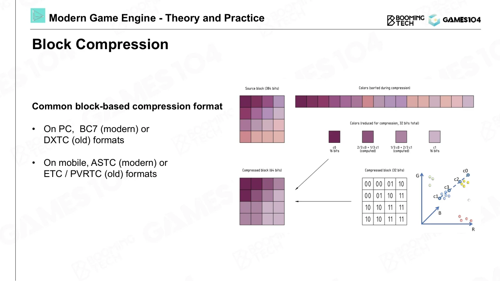
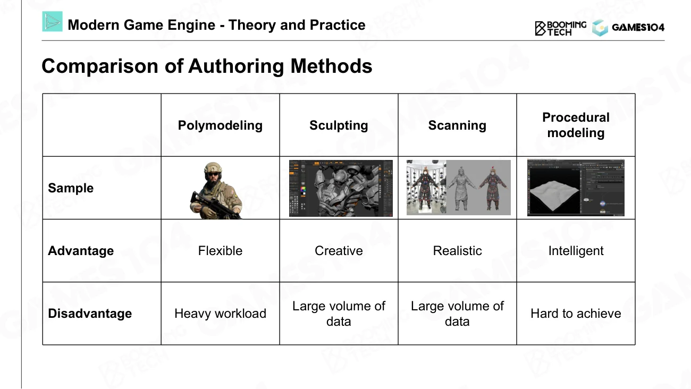
常见坑
把 JPG/PNG 直接当纹理用 → 无法随机访问、解码慢 → 导入时转换为 BC7/ASTC 等块压缩格式。
所有纹理都用最高质量 → 显存和带宽爆炸 → 按用途选择压缩格式与 mip 策略。
UE / Unity 落地
UE：Texture 资产的 Compression Settings 可选 BC7、DXT 等，移动端平台会映射到 ASTC/ETC。
Unity：Texture Import 的 Compression 选项按平台选择，Android/iOS 可覆盖为 ASTC。
077. GPU-Driven 与 Cluster-Based Mesh Pipeline（含 Nanite）
随着 GPU 越来越强，越来越多工作被搬到 GPU，这就是 GPU-Driven。课件给了两个代表性架构：
- GPU-Driven Rendering Pipeline（2015）：Mesh Cluster Rendering——单次 drawcall 里画任意数量网格，由 GPU 按 cluster 包围盒剔除，并做 cluster 深度排序。
- Geometry Rendering Pipeline Architecture（2021）：把渲染图元分成 Batch（单次 API draw，由许多 Surf 组成）与 Surf（子网格片段）等层次。
基于 Cluster 的网格管线：把网格切成许多小 cluster，每个 cluster 有包围体，GPU 并行剔除、排序、绘制。课件给了一个数字：35 万三角形被剔除到 2791 个 cluster。
Nanite 是这套思想的工业实现：层次化 LOD cluster，边界无缝；不需要特殊硬件支持，而是在预计算的 BVH 树上用 GPU 的持久线程（persistent threads）做层次化 cluster 剔除，而不是依赖 task shader。
这一节的意义是：传统管线是 CPU 决定画什么、GPU 执行；GPU-Driven 把“决定”也交给 GPU，从而支撑海量三角形与开放世界。
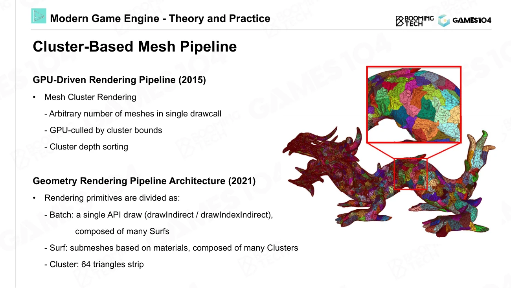
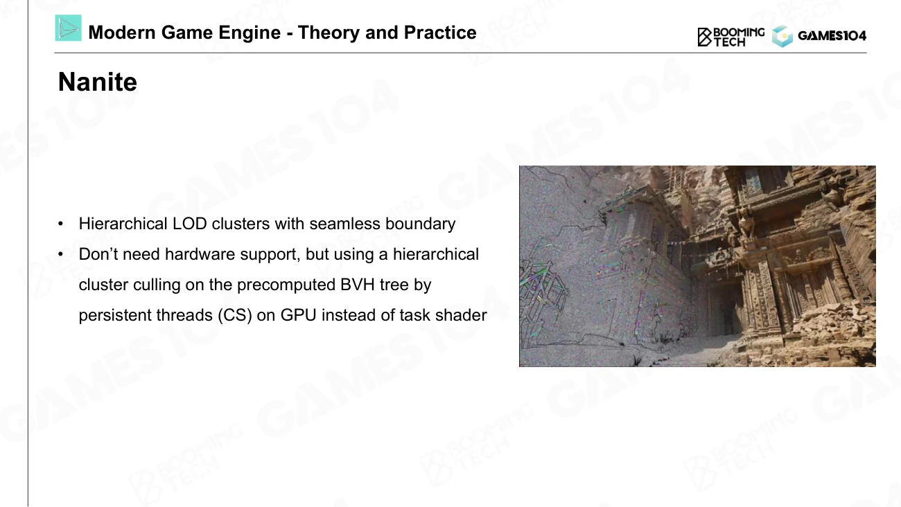
常见坑
以为 GPU-Driven 就是“不用管性能” → 它只是把瓶颈转移，带宽和内存仍是硬约束 → 仍需做 LOD、压缩与剔除。
在小场景盲目上 Nanite → 开销可能不划算 → 按项目规模与目标平台评估。
UE / Unity 落地
UE5：Nanite 是 Static Mesh 的可选开关，开启后自动做 cluster 层次 LOD 与 GPU 剔除。
Unity：GPU Driven 相关能力体现在 SRP Batcher、BatchRendererGroup 等机制上，思路类似但实现不同。
引擎对照表
| 概念 / 效果 | Unreal Engine | Unity |
|---|---|---|
子网格与多材质 | Static Mesh 的 Element + Material | Mesh subMeshCount + Renderer.materials |
视锥剔除 | Primitive Bounds 自动参与剔除， | Renderer.bounds 参与视锥剔除，Occlusion Culling 窗口 |
纹理块压缩 | Texture Compression Settings（BC7/DXT，移动端 ASTC/ETC） | Texture Import Compression（按平台覆盖 ASTC） |
GPU-Driven / Cluster 管线 | Nanite（层次化 cluster + GPU 剔除） | BatchRendererGroup / SRP Batcher（思路对应） |
材质变体替代分支 | Material Static Switch 生成变体 | pragma multi_compile / shader_feature |
性能瓶颈定位 |
| Profiler + Frame Debugger |
术语双语表
| English | 中文 | 说明 |
|---|---|---|
| SIMT | 单指令多线程 | GPU 的并行执行模型，SIMD 与多线程结合，Warp 内同指令执行。 |
| Warp | 线程束 | GPU 以一组线程（通常 32 个）为单位执行同一条指令，分支发散代价高。 |
| Submesh | 子网格 | 索引缓冲的一段 offset/count，绑定独立材质，解决单模型多材质。 |
| View Frustum Culling | 视锥剔除 | 用包围体与视锥做相交测试，排除视锥外物体。 |
| BVH | 包围体层次结构 | 层次化包围体树，加速剔除与相交测试。 |
| PVS | 潜在可见集 | 预计算区域间可见性，运行时查表，适合静态场景。 |
| Block Compression | 块压缩 | 把纹理切块独立解码，支持 GPU 随机访问，如 BC7/ASTC。 |
| GPU-Driven | GPU 驱动渲染 | 把剔除与绘制决策搬到 GPU，支撑海量图元。 |
| Nanite | Nanite 虚拟几何 | UE5 的层次化 cluster LOD + GPU 剔除方案，无需特殊硬件。 |
| TMU Bound | 纹理单元瓶颈 | 纹理采样次数过多导致 TMU 成为性能瓶颈。 |
课后练习
01 为什么游戏纹理不能直接用 JPG/PNG，而要用 BC7/ASTC 这类块压缩格式？
查看答案
提示：
从 GPU 采样方式与解码方式考虑。
JPG/PNG 设计为整图压缩/解压，无法随机访问单个像素；GPU 采样需要任意位置快速取值。块压缩把纹理切成固定块（如 4×4）独立解码，支持随机访问且解码速度快，同时压缩率与画质可接受。
02 一个模型有 3 个材质，引擎如何组织数据才能一次上传网格、分材质绘制？
查看答案
提示：
子网格 offset/count。
把索引缓冲按材质分成 3 段，每段记录 offset 和 count 作为一个 submesh，每个 submesh 绑定各自的材质与纹理。绘制时按 submesh 分别提交 drawcall，共享同一份顶点/索引缓冲。
03 视锥剔除中，包围体需要满足哪些条件？为什么包围盒过大会导致剔除失效？
查看答案
提示：
课件列了五条标准。
需要：相交测试便宜、贴合紧、计算便宜、易于旋转变换、占用内存少。包围盒过大时，即使物体本身在视锥外，包围盒仍与视锥相交，测试通过导致物体被绘制，剔除失效。
04 简述 Nanite 的核心思想，并说明它为什么不需要特殊硬件支持。
查看答案
提示：
层次化 cluster + BVH + 持久线程 CS。
Nanite 把网格切成层次化 LOD cluster，边界无缝；在预计算的 BVH 树上用 GPU 持久线程（compute shader）做层次化 cluster 剔除与绘制决策，而不是依赖 task shader 等特殊硬件功能，因此在普通 GPU 上即可运行。
05 实践：在 UE 中打开 stat unit，观察 Frame/Game/Draw/GPU 四项，判断你的场景是 CPU 还是 GPU 瓶颈，并说明下一步优化方向。
查看答案
提示：
Game/Draw 高偏 CPU，GPU 高偏 GPU。
若 Game 或 Draw 明显高于 GPU，说明 CPU 提交或游戏线程是瓶颈，应减少 drawcall、合批、优化逻辑；若 GPU 明显最高，说明像素/顶点/带宽瓶颈，应降低 shader 复杂度、减少 overdraw、检查纹理带宽。